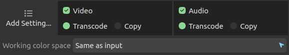
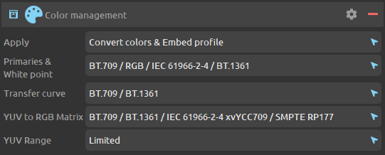

Manage and convert color spaces¶
Depending on the file format and pixel format of the input and output medias, DuME tries to automatically manage and convert colors. If you need specific color profiles, you can also set you own parameters.
Color spaces in DuME¶
Color spaces are usually represented as three independant parameters:
- Primaries define how the primary color of each channel should be represented. i.e. how should be represented the perfect red, green and blue colors in an RGB color space.
- The White Point defines the exact color of what is considered full white in this color space.
- The Transfer curve defines how the values from black to white (levels) are interpolated. It is sometimes referred as gamma but it is not exactly a gamma curve, although a simple gamma can give an approximation of this transfer curve.
In DuME, the primaries and the white point are set together with the same parameter, which means the color profiles used by DuME have only two parameters: Primaries and Transfer curve.
Apart from these parameters, the way these colors can be stored can vary according to the pixel format, which, in videos, is usually either RGB or YUV. The first describes the color as Red, Green and Blue components, and the latter as a Luma component, and two Chroma components.
DuME associates a conversion Matrix with the color spaces to convert between the YUV and RGB spaces.
Finally, when working in the YUV space, a fourth setting sets the range to full or limited. In an 8-bit full range, values for each channel range from 0 to 255 whereas in the limited range, values are constrained to the 16-235 range.
Color profile (presets) definitions¶
This is the list of color profiles (i.e. presets) in DuME and their default parameters
| Profile name | Primaries | Transfer curve | Matrix | Range |
|---|---|---|---|---|
| Images (sRGB) | BT.709 / RGB / IEC 61966-2-4 | sRGB / IEC 61966-2-1 | RGB | Full |
| HD Video (BT.709) | BT.709 / RGB / IEC 61966-2-4 | BT.709 | BT.709 | Limited |
| UHD Video | BT.2020 | BT.2020 10 bit | BT.2020 CL | Full |
| UHD HDR Video | BT.2020 | BT.2020 12 bit | BT.2020 CL | Full |
| Display P3 | P3 D65 | sRGB / IEC 61966-2-1 | RGB | Full |
| DCI P3 | DCI P3 | DCI P3 (gamma 2.6) | RGB | Full |
| Linear RGB | BT.709 / RGB / IEC 61966-2-4 | Linear | RGB | Full |
| ACEScg | ACEScg | Linear | RGB | Full |
| PAL / SECAM | PAL & SECAM / BT.470 BG / BT.601 | PAL & SECAM / BT.470 M | PAL & SECAM | Limited |
| NTSC | NTSC / BT.601 | NTSC / BT.601 | NTSC | Limited |
| QT gamma 1.96 | BT.709 / RGB / IEC 61966-2-4 | QT gamma 1.96 | BT.709 | Limited |
Note
This list may be adjusted in future versions.
If you feel these default values could be improved, or other ones added, please post your suggestions here.
Setting the color management¶

You can change the color space DuME works in. The default is to keep the color profile from the input media, but you may need to change this if:
- You’re using specific LUTs, options, or a lot of filters, which need specific or wider color profiles.
Hint
You don’t necessarily need to change the working color space when applying a LUT, as DuME is able to change the color space before and after applying the LUT to use it in its intended color space.
If you know you don’t need any color conversions and color management, you can turn off DuME color management by setting the working color space to None. This will make encoding a bit faster and may make things simpler as DuME will just copy color data without altering anything.
Note
When transcoding from image sequences (sRGB) to videos (mostly BT.709 or BT.2020 YUV), turning off color management will result in a gamma shift.
When rendering After Effects compositions, you’ll also need to enable color management, as After Effects compositions are rendered in a linear RGB color space and not in the output color space.
Automatic color conversion by DuME¶
When all color parameters are left to their default values, here is what DuME does:
- If the input and output pixel formats and profiles are the same, there is no conversion.
- If one of the profiles or pixel format differ, DuME automatically converts the colors and sets the color profile, according to the following defaults.
Here are the default values used by DuME, depending on the container or the pixel format, sorted by priority.
- OpenEXR
.exrfiles: Linear RGB. - In general, all Image sequences: sRGB.
- MP4
.mp4or WebM.webmfiles: BT.709 - h264 / AVC or h265 / HEVC encoded files: BT.709
- QuickTime Animation / RLE encoded files: BT.709 in an RGB space.
- RGB pixels, with 32bpc: Linear RGB
- RGB pixels, with less than 32bpc: sRGB
- YUV pixels: BT.709
Note
This list may be adjusted in future versions.
If you feel these default values could be improved, or other ones added, please post your suggestions here.
Input color interpretation¶

If DuME does not correctly detect the colors from the input media (or if they’re no standard) and the above default values do not correspond to your media file, you can set the interpretation of the input medias.
You can quickly set all values to a specific color space by selecting a preset in the options.

For any specific parameter, if you don’t know what to choose, leave it on Auto.
Output color conversion¶

DuME tries to automatically manage and convert the colors of the input media depending on the output format. If you need, you can force it to convert to or set a specific color space.
The first parameter “Apply” can change the way DuME manages the colors. By default, it will both convert the colors and try to set the metadata in the output file (embed color profile). You can also set it to just convert the colors, or to just add the metadata.
You can quickly set all values to a specific color space by selecting a preset in the options.
For any specific parameter, if you don’t know what to choose, leave it on Auto.
Note
The available parameters change a bit depending on the need for conversion. DuME does not support conversion to all formats (espacially the older ones).